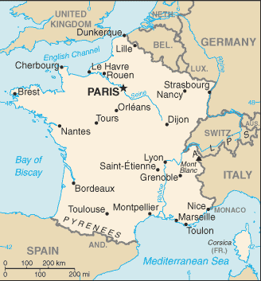
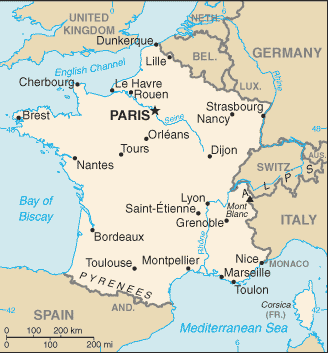

Europe :: FRANCE
Introduction :: FRANCE
-
France today is one of the most modern countries in the world and is a leader among European nations. It plays an influential global role as a permanent member of the United Nations Security Council, NATO, the G-7, the G-20, the EU, and other multilateral organizations. France rejoined NATO's integrated military command structure in 2009, reversing DE GAULLE's 1966 decision to withdraw French forces from NATO. Since 1958, it has constructed a hybrid presidential-parliamentary governing system resistant to the instabilities experienced in earlier, more purely parliamentary administrations. In recent decades, its reconciliation and cooperation with Germany have proved central to the economic integration of Europe, including the introduction of a common currency, the euro, in January 1999. In the early 21st century, five French overseas entities - French Guiana, Guadeloupe, Martinique, Mayotte, and Reunion - became French regions and were made part of France proper.
Geography :: FRANCE
-
metropolitan France: Western Europe, bordering the Bay of Biscay and English Channel, between Belgium and Spain, southeast of the UK; bordering the Mediterranean Sea, between Italy and SpainFrench Guiana: Northern South America, bordering the North Atlantic Ocean, between Brazil and SurinameGuadeloupe: Caribbean, islands between the Caribbean Sea and the North Atlantic Ocean, southeast of Puerto RicoMartinique: Caribbean, island between the Caribbean Sea and North Atlantic Ocean, north of Trinidad and TobagoMayotte: Southern Indian Ocean, island in the Mozambique Channel, about halfway between northern Madagascar and northern MozambiqueReunion: Southern Africa, island in the Indian Ocean, east of Madagascarmetropolitan France: 46 00 N, 2 00 EFrench Guiana: 4 00 N, 53 00 WGuadeloupe: 16 15 N, 61 35 WMartinique: 14 40 N, 61 00 WMayotte: 12 50 S, 45 10 EReunion: 21 06 S, 55 36 Emetropolitan France: EuropeFrench Guiana: South AmericaGuadeloupe: Central America and the CaribbeanMartinique: Central America and the CaribbeanMayotte: AfricaReunion: Worldtotal: 643,801 sq km; 551,500 sq km (metropolitan France)land: 640,427 sq km; 549,970 sq km (metropolitan France)water: 3,374 sq km; 1,530 sq km (metropolitan France)note: the first numbers include the overseas regions of French Guiana, Guadeloupe, Martinique, Mayotte, and Reunioncountry comparison to the world: 44slightly more than four times the size of Georgia; slightly less than the size of Texasmetropolitan France - total: 2,751 kmborder countries (8): Andorra 55 km, Belgium 556 km, Germany 418 km, Italy 476 km, Luxembourg 69 km, Monaco 6 km, Spain 646 km, Switzerland 525 kmFrench Guiana - total: 1,205 kmborder countries (2): Brazil 649 km, Suriname 556 kmtotal: 4,853 kmmetropolitan France: 3,427 kmterritorial sea: 12 nmcontiguous zone: 24 nmexclusive economic zone: 200 nm (does not apply to the Mediterranean Sea)continental shelf: 200-m depth or to the depth of exploitationmetropolitan France: generally cool winters and mild summers, but mild winters and hot summers along the Mediterranean; occasional strong, cold, dry, north-to-northwesterly wind known as mistralFrench Guiana: tropical; hot, humid; little seasonal temperature variationGuadeloupe and Martinique: subtropical tempered by trade winds; moderately high humidity; rainy season (June to October); vulnerable to devastating cyclones (hurricanes) every eight years on averageMayotte: tropical; marine; hot, humid, rainy season during northeastern monsoon (November to May); dry season is cooler (May to November)Reunion: tropical, but temperature moderates with elevation; cool and dry (May to November), hot and rainy (November to April)metropolitan France: mostly flat plains or gently rolling hills in north and west; remainder is mountainous, especially Pyrenees in south, Alps in eastFrench Guiana: low-lying coastal plains rising to hills and small mountainsGuadeloupe: Basse-Terre is volcanic in origin with interior mountains; Grande-Terre is low limestone formation; most of the seven other islands are volcanic in originMartinique: mountainous with indented coastline; dormant volcanoMayotte: generally undulating, with deep ravines and ancient volcanic peaksReunion: mostly rugged and mountainous; fertile lowlands along coastmean elevation: 375 melevation extremes: lowest point: Rhone River delta -2 mhighest point: Mont Blanc 4,810 mnote: to assess the possible effects of climate change on the ice and snow cap of Mont Blanc, its surface and peak have been extensively measured in recent years; these new peak measurements have exceeded the traditional height of 4,807 m and have varied between 4,808 m and 4,811 m; the actual rock summit is 4,792 m and is 40 m away from the ice-covered summitmetropolitan France: coal, iron ore, bauxite, zinc, uranium, antimony, arsenic, potash, feldspar, fluorspar, gypsum, timber, arable land, fishFrench Guiana: gold deposits, petroleum, kaolin, niobium, tantalum, clayagricultural land: 52.7%arable land 33.4%; permanent crops 1.8%; permanent pasture 17.5%forest: 29.2%other: 18.1% (2011 est.)total: 26,420 sq km 26,950 sq kmmetropolitan France: 26,000 sq km (2012)much of the population is concentrated in the north and southeast; although there are many urban agglomerations throughout the country, Paris is by far the largest city, with Lyon ranked a distant secondmetropolitan France: flooding; avalanches; midwinter windstorms; drought; forest fires in south near the Mediterraneanoverseas departments: hurricanes (cyclones); floodingvolcanism: Montagne Pelee (1,394 m) on the island of Martinique in the Caribbean is the most active volcano of the Lesser Antilles arc, it last erupted in 1932; a catastrophic eruption in May 1902 destroyed the city of St. Pierre, killing an estimated 30,000 people; La Soufriere (1,467 m) on the island of Guadeloupe in the Caribbean last erupted from July 1976 to March 1977; these volcanoes are part of the volcanic island arc of the Lesser Antilles that extends from Saba in the north to Grenada in the southsome forest damage from acid rain; air pollution from industrial and vehicle emissions; water pollution from urban wastes, agricultural runoffparty to: Air Pollution, Air Pollution-Nitrogen Oxides, Air Pollution-Persistent Organic Pollutants, Air Pollution-Sulfur 85, Air Pollution-Sulfur 94, Air Pollution-Volatile Organic Compounds, Antarctic-Environmental Protocol, Antarctic-Marine Living Resources, Antarctic Seals, Antarctic Treaty, Biodiversity, Climate Change, Climate Change-Kyoto Protocol, Desertification, Endangered Species, Hazardous Wastes, Law of the Sea, Marine Dumping, Marine Life Conservation, Ozone Layer Protection, Ship Pollution, Tropical Timber 83, Tropical Timber 94, Wetlands, Whalingsigned, but not ratified: none of the selected agreementslargest West European nation; most major French rivers - the Meuse, Seine, Loire, Charente, Dordogne, and Garonne - flow northward or westward into the Atlantic Ocean, only the Rhone flows southward into the Mediterranean Sea
People and Society :: FRANCE
-
67,106,161note: the above figure is for metropolitan France and five overseas regions; the metropolitan France population is 62,814,233 (July 2017 est.)country comparison to the world: 21noun: Frenchman(men), Frenchwoman(women)adjective: FrenchCeltic and Latin with Teutonic, Slavic, North African, Indochinese, Basque minoritiesoverseas departments: black, white, mulatto, East Indian, Chinese, AmerindianFrench (official) 100%, declining regional dialects and languages (Provencal, Breton, Alsatian, Corsican, Catalan, Basque, Flemish, Occitan, Picard)overseas departments: French, Creole patois, Mahorian (a Swahili dialect)Christian (overwhelmingly Roman Catholic) 63-66%, Muslim 7-9%, Buddhist 0.5-0.75%, Jewish 0.5-0.75%, other 0.5-1.0%, none 23-28%note: France maintains a tradition of secularism and has not officially collected data on religious affiliation since the 1872 national census, which complicates assessments of France's religious composition; an 1872 law prohibiting state authorities from collecting data on individuals' ethnicity or religious beliefs was reaffirmed by a 1978 law emphasizing the prohibition of the collection or exploitation of personal data revealing an individual's race, ethnicity, or political, philosophical, or religious opinions; a 1905 law codified France's separation of church and state (2015 est.)0-14 years: 18.53% (male 6,360,218/female 6,076,598)15-24 years: 11.79% (male 4,045,901/female 3,864,395)25-54 years: 37.78% (male 12,773,900/female 12,578,256)55-64 years: 12.42% (male 4,020,507/female 4,315,407)65 years and over: 19.48% (male 5,648,888/female 7,422,091) (2017 est.)total dependency ratio: 59.2youth dependency ratio: 29.1elderly dependency ratio: 30.2potential support ratio: 3.3 (2015 est.)total: 41.4 yearsmale: 39.6 yearsfemale: 43.1 years (2017 est.)country comparison to the world: 390.39% (2017 est.)country comparison to the world: 16312.2 births/1,000 population (2017 est.)country comparison to the world: 1639.3 deaths/1,000 population (2017 est.)country comparison to the world: 601.1 migrant(s)/1,000 population (2017 est.)country comparison to the world: 57much of the population is concentrated in the north and southeast; although there are many urban agglomerations throughout the country, Paris is by far the largest city, with Lyon ranked a distant secondurban population: 80% of total population (2017)rate of urbanization: 0.76% annual rate of change (2015-20 est.)PARIS (capital) 10.843 million; Lyon 1.609 million; Marseille-Aix-en-Provence 1.605 million; Lille 1.027 million; Nice-Cannes 967,000; Toulouse 938,000 (2015)at birth: 1.05 male(s)/female0-14 years: 1.05 male(s)/female15-24 years: 1.05 male(s)/female25-54 years: 1.01 male(s)/female55-64 years: 0.93 male(s)/female65 years and over: 0.75 male(s)/femaletotal population: 0.96 male(s)/female (2016 est.)28.1 years (2010 est.)8 deaths/100,000 live births (2015 est.)country comparison to the world: 159total: 3.2 deaths/1,000 live birthsmale: 3.6 deaths/1,000 live birthsfemale: 2.9 deaths/1,000 live births (2017 est.)country comparison to the world: 213total population: 81.9 yearsmale: 78.8 yearsfemale: 85.2 years (2017 est.)country comparison to the world: 172.07 children born/woman (2017 est.)country comparison to the world: 10983% (2010/11)11.5% of GDP (2014)country comparison to the world: 83.23 physicians/1,000 population (2015)6.4 beds/1,000 population (2011)improved:urban: 100% of populationrural: 100% of populationtotal: 100% of populationunimproved:urban: 0% of populationrural: 0% of populationtotal: 0% of population (2015 est.)improved:urban: 98.6% of populationrural: 98.9% of populationtotal: 98.7% of populationunimproved:urban: 1.4% of populationrural: 1.1% of populationtotal: 1.3% of population (2015 est.)0.4% (2016 est.)country comparison to the world: 70180,000 (2016 est.)country comparison to the world: 30<1000 (2016 est.)21.6% (2016)country comparison to the world: 875.5% of GDP (2013)country comparison to the world: 43total: 16 yearsmale: 16 yearsfemale: 17 years (2014)total: 24.6%male: 25%female: 24% (2016 est.)country comparison to the world: 39
Government :: FRANCE
-
conventional long form: French Republicconventional short form: Francelocal long form: Republique francaiselocal short form: Franceetymology: name derives from the Latin "Francia" meaning "Land of the Franks"; the Franks were a group of Germanic tribes located along the middle and lower Rhine River in the 3rd century A.D. who merged with Gallic-Roman populations in succeeding centuries and to whom they passed on their namesemi-presidential republicname: Parisgeographic coordinates: 48 52 N, 2 20 Etime difference: UTC+1 (6 hours ahead of Washington, DC, during Standard Time)daylight saving time: +1hr, begins last Sunday in March; ends last Sunday in Octobernote: applies to metropolitan France only, not to its overseas departments, collectivities, or territories18 regions (regions, singular - region); Auvergne-Rhone-Alpes, Bourgogne-Franche-Comte (Burgundy-Free County), Bretagne (Brittany), Centre-Val de Loire (Center-Loire Valley), Corse (Corsica), Grand Est (Grand East), Guadeloupe, Guyane (French Guiana), Hauts-de-France (Upper France), Ile-de-France, Martinique, Mayotte, Normandie (Normandy), Nouvelle-Aquitaine (New Aquitaine), Occitanie (Occitania), Pays de la Loire (Lands of the Loire), Provence-Alpes-Cote d'Azur, Reunionnote: France is divided into 13 metropolitan regions (including the "territorial collectivity" of Corse or Corsica) and 5 overseas regions (French Guiana, Guadeloupe, Martinique, Mayotte, and Reunion) and is subdivided into 96 metropolitan departments and 5 overseas departments (which are the same as the overseas regions)Clipperton Island, French Polynesia, French Southern and Antarctic Lands, New Caledonia, Saint Barthelemy, Saint Martin, Saint Pierre and Miquelon, Wallis and Futunanote: the US Government does not recognize claims to Antarctica; New Caledonia has been considered a "sui generis" collectivity of France since 1998, a unique status falling between that of an independent country and a French overseas departmentno official date of independence: 486 (Frankish tribes unified under Merovingian kingship); 10 August 843 (Western Francia established from the division of the Carolingian Empire); 14 July 1789 (French monarchy overthrown); 22 September 1792 (First French Republic founded); 4 October 1958 (Fifth French Republic established)Fete de la Federation, 14 July (1790); note - although often incorrectly referred to as Bastille Day, the celebration actually commemorates the holiday held on the first anniversary of the storming of the Bastille (on 14 July 1789) and the establishment of a constitutional monarchy; other names for the holiday are Fete Nationale (National Holiday) and quatorze juillet (14th of July)history: many previous; latest effective 4 October 1958amendments: proposed by the president of the republic (upon recommendation of the prime minister and Parliament) or by Parliament; proposals submitted by Parliament members require passage by both houses followed by approval in a referendum; passage of proposals submitted by the government can bypass a referendum if submitted by the president to Parliament and passed by at least three-fifths majority vote by Parliament’s National Assembly; amended many times, last in 2008 (2016)civil law; review of administrative but not legislative actshas not submitted an ICJ jurisdiction declaration; accepts ICCt jurisdictioncitizenship by birth: nocitizenship by descent only: at least one parent must be a citizen of Francedual citizenship recognized: yesresidency requirement for naturalization: 5 years18 years of age; universalchief of state: President Emmanuel MACRON (since 14 May 2017)head of government: Prime Minister Edouard PHILIPPE (since 15 May 2017)cabinet: Council of Ministers appointed by the president at the suggestion of the prime ministerelections/appointments: president directly elected by absolute majority popular vote in 2 rounds if needed for a 5-year term (eligible for a second term); election last held on 23 April and 7 May 2017 (next to be held in April 2022); prime minister appointed by the presidentelection results: percent of vote in first round - Emmanuel MACRON (EM) 24.0%, Marine LE PEN (FN) 21.3%, Francois FILLON (LR) 20.0%, Jean-Luc MELENCHON (FI) 19.6%, Benoit HAMON (PS) 6.4%, other 8.7%; Emmanuel MACRON elected president in second round; percent of vote - MACRON 66.1%, LE PEN 33.9%description: bicameral Parliament or Parlement consists of the Senate or Senat (348 seats - 328 for metropolitan France and overseas departments and regions of Guadeloupe, Martinque, French Guiana, Reunion, and Mayotte, 2 for New Caledonia, 2 for French Polynesia, 1 for Saint-Pierre and Miquelon, 1 for Saint-Barthelemy, 1 for Saint-Martin, 1 for Wallis and Futuna, and 12 for French nationals abroad; members indirectly elected by departmental electoral colleges using absolute majority vote in 2 rounds if needed for departments with 1-3 members and proportional representation vote in departments with 4 or more members; members serve 6-year terms with one-half of the membership renewed every 3 years) and the National Assembly or Assemblee Nationale (577 seats - 556 for metropolitan France, 10 for overseas departments, and 11 for citizens abroad; members directly elected by absolute majority vote in 2 rounds if needed to serve 5-year terms)elections: Senate - last held on 28 September 2014 (next to be held on 24 September 2017); National Assembly - last held on 11 and 18 June 2017 (next to be held in June 2022)election results: Senate - percent of vote by party - NA; seats by party - UMP 187, PS 152, other 9National Assembly - percent of vote by party first round - EM 28.2%, LR 15.8%. FN 13.2%, FI 11.0%, PS 7.4%, other 24.4%; percent of vote by party second round - EM 43.1%, LR 22.2%, FN 8.8%, MoDEM 6.1%, PS 5.7%. FI 4.9%, other 9.2%; seats by party - EM 308, LR 112, MoDEM 42, PS 29, UDI 18, FI 17, PCF 10, FN 8, other 33highest court(s): Court of Cassation or Cour de Cassation (consists of the court president, 6 divisional presiding judges, 120 trial judges, and 70 deputy judges organized into 6 divisions - 3 civil, 1 commercial, 1 labor, and 1 criminal); Constitutional Council (consists of 9 members)judge selection and term of office: Court of Cassation judges appointed by the president of the republic from nominations from the High Council of the Judiciary, presided over by the Court of Cassation and 15 appointed members; judges appointed for life; Constitutional Council members - 3 appointed by the president of the republic and 3 each by the National Assembly and Senate presidents; members serve 9-year, non-renewable terms with one-third of the membership renewed every 3 yearssubordinate courts: appellate courts or Cour d'Appel; regional courts or Tribunal de Grande Instance; first instance courts or Tribunal d'instanceDemocratic Movement or MoDEM [Francois BAYROU]Europe Ecology - The Greens or EELV [David CORMAND]Forward! (En Marche!) or EM [Catherine BARBAROUX, acting]French Communist Party or PCF [Pierre LAURENT]La France insoumise or FI [Jean-Luc MELENCHON]Left Front Coalition or FDG [Jean-Luc MELENCHON]Left Party or PG [collective leadership; main leaders Jean-Luc MELENCHON and Francois COCO, linked with the movement La France Insoumise or FI [Jean-Luc MELENCHON]]Left Radical Party or PRG [Sylvia PINEL] (formerly Radical Socialist Party or PRS and the Left Radical Movement or MRG)Movement for France or MPF [Philippe DE VILLIERS]National Front or FN [Marine LE PEN]New Anticapitalist Party or NPA [collective leadership; main spokesperson Christine POUPIN; presidential candIdate Philippe POUTOU]Rally for France or RPF [Igor KUREK]Republican and Citizen Movement or MRC [Jean-Luc LAURENT]Socialist Party or PS [vacant]Stand Up France (Debout La France) [Nicolas DUPONT-AIGNAN]The Centrists [Herve MORIN] (formerly new Center of NC)The Republicans or LR (formerly Union for a Popular Movement or UMP) [vacant]Union des Democrates et Independants or UDI [Jean-Christohe LAGARDE] and Democratic Movement or MoDem [Francois BAYROU] (previously Union for French Democracy or UDF); together known as UDI-Modem; Radical Party [Laurent HENART] is a member of UDIUnited Republic or RS [Dominique DE VILLEPIN]Worker's Struggle (Lutte Ouvriere) or LO; also known as Communist Union; [collective leadership; spokespersons Nathalie ARTHAUD and Arlette LAGUILLER]French Confederation of Management - General Confederation of Executives) or CFE-CGC (Confederation francaise de l'encadrement - Confederation generale des cadres) [Francois HOMMERIL] (independent white-collar union with 140,000 members)French Democratic Confederation of Labor or CFDT (Confederation Francaise Democratique du Travail) [Laurent BERGER] (left-leaning labor union with approximately 875,000 members)French Confederation of Christian Workers or CFTC (Confederation francaise des travailleurs chretiens) [Philippe LOUIS] (independent labor union founded by Catholic workers that claims 142,000 members)General Confederation of Labor or CGT (Confederation generale du travail) [Philippe MARTINEZ] (historically communist labor union with approximately 710,000 members)General Confederation of Labor - Worker's Force) or FO (Confederation generale du travail - Force ouvriere) [Jean-Claude MAILLY] (independent labor union with an estimated 300,000 members)Mouvement des entreprises de France or MEDEF [Pierre GATTAZ] (employers' union with claimed 750,000 companies as members)French Guiana:conservationists; gold mining pressure groups; hunting pressure groupsGuadeloupe:Christian Movement for the Liberation of Guadeloupe or KLPGGeneral Federation of Guadeloupe Workers or CGT-GGeneral Union of Guadeloupe Workers or UGTGMovement for an Independent Guadeloupe or MPGIThe Socialist Renewal MovementMartinique:Caribbean Revolutionary Alliance or ARCCentral Union for Martinique Workers or CSTMFrantz Fanon CircleLeague of Workers and PeasantsProletarian Action Group or GAPReunion:NAADB (nonregional member), AfDB (nonregional member), Arctic Council (observer), Australia Group, BDEAC, BIS, BSEC (observer), CBSS (observer), CE, CERN, EAPC, EBRD, ECB, EIB, EITI (implementing country), EMU, ESA, EU, FAO, FATF, FZ, G-5, G-7, G-8, G-10, G-20, IADB, IAEA, IBRD, ICAO, ICC (national committees), ICCt, ICRM, IDA, IEA, IFAD, IFC, IFRCS, IGAD (partners), IHO, ILO, IMF, IMO, IMSO, InOC, Interpol, IOC, IOM, IPU, ISO, ITSO, ITU, ITUC (NGOs), MIGA, MINURSO, MINUSMA, MINUSTAH, MONUSCO, NATO, NEA, NSG, OAS (observer), OECD, OIF, OPCW, OSCE, Pacific Alliance (observer), Paris Club, PCA, PIF (partner), Schengen Convention, SELEC (observer), SPC, UN, UNCTAD, UNESCO, UNHCR, UNIDO, UNIFIL, Union Latina, UNMIL, UNOCI, UNRWA, UNSC (permanent), UNTSO, UNWTO, UPU, WCO, WFTU (NGOs), WHO, WIPO, WMO, WTO, ZCchief of mission: Ambassador Gerard Roger ARAUD (since 18 September 2014)chancery: 4101 Reservoir Road NW, Washington, DC 20007telephone: [1] (202) 944-6000FAX: [1] (202) 944-6166consulate(s) general: Atlanta, Boston, Chicago, Houston, Los Angeles, Miami, New Orleans, New York, San Francisco, Washington DCchief of mission: Ambassador (vacant); Charge d'Affaires D. Brent HARDT (since July 2017) note - also accredited to Monacoembassy: 2 Avenue Gabriel, 75382 Paris Cedex 08mailing address: PSC 116, APO AE 09777telephone: [33] (1) 43-12-22-22FAX: [33] (1) 42 66 97 83consulate(s) general: Marseille, Strasbourgconsulate(s): Bordeaux, Lyon, Rennes, Toulousethree equal vertical bands of blue (hoist side), white, and red; known as the "Le drapeau tricolore" (French Tricolor), the origin of the flag dates to 1790 and the French Revolution when the "ancient French color" of white was combined with the blue and red colors of the Parisian militia; the official flag for all French dependent areasnote: the design and/or colors are similar to a number of other flags, including those of Belgium, Chad, Cote d'Ivoire, Ireland, Italy, Luxembourg, and NetherlandsGallic rooster, fleur-de-lis, Marianne (female personification); national colors: blue, white, redname: "La Marseillaise" (The Song of Marseille)lyrics/music: Claude-Joseph ROUGET de Lislenote: adopted 1795, restored 1870; originally known as "Chant de Guerre pour l'Armee du Rhin" (War Song for the Army of the Rhine), the National Guard of Marseille made the song famous by singing it while marching into Paris in 1792 during the French Revolutionary Wars
Economy :: FRANCE
-
The French economy is diversified across all sectors. The government has partially or fully privatized many large companies, including Air France, France Telecom, Renault, and Thales. However, the government maintains a strong presence in some sectors, particularly power, public transport, and defense industries. Despite terrorist attacks, labor strikes, and bad weather, France is still the most visited country in the world with 83 million foreign tourists in 2016, including 530,000 who came for the 2016 Euro Cup. France's leaders remain committed to a capitalism in which they maintain social equity by means of laws, tax policies, and social spending that mitigate economic inequality.France's real GDP grew by 1.1% in 2016, down from 1.3% the year before. The unemployment rate (including overseas territories) increased from 7.8% in 2008 to 10.2% in 2015, before slightly falling to 10% in 2016. Youth unemployment in metropolitan France decreased from 24.6% in the fourth quarter of 2014 to 24% in the fourth quarter of 2016.Lower-than-expected growth and high spending have strained France's public finances. Despite measures to restore public finances since President Francois HOLLANDE took office in 2012, the budget deficit rose from 3.3% of GDP in 2008 to 7.5% of GDP in 2009 before improving to 3.4% of GDP in 2016. Meanwhile, France's public debt rose from 89.5% of GDP in 2012 to 96% in 2016.President HOLLANDE’s policies aimed to enhance French industry’s competitiveness and to lower high jobless figures. The Competitiveness and Employment Tax Credit of 2012, the Responsibility and Solidarity Pact of 2014, the Investment Stimulus Plan, and the Emergency Jobs Plan represent more than $42.6 billion in support for businesses in 2017 by lowering French labor costs, but so far the results of these policies have been marginal on France’s competitiveness and job creation. In an effort to bolster social justice, the 2017 budget bill contained provisions to reduce income taxes for households and for small and medium sized enterprises.During his mandate, President HOLLANDE oversaw two highly unpopular economic reforms that led to widespread protests. The “Macron Law” of 2015, enacted to boost economic growth, authorized businesses to open some Sundays of each month and allowed flexibility to negotiate pay and working hours. The “El Khomri law,” imposed by decree in 2016, aimed to make it easier for businesses to employ people and gave employers more leeway to negotiate hours, wages, and time off.$2.735 trillion (2016 est.)$2.669 trillion (2015 est.)$2.612 trillion (2014 est.)note: data are in 2016 dollarscountry comparison to the world: 11$2.466 trillion (2016 est.)1.2% (2016 est.)1.1% (2015 est.)0.9% (2014 est.)country comparison to the world: 168$42,300 (2016 est.)$42,000 (2015 est.)$41,800 (2014 est.)note: data are in 2016 dollarscountry comparison to the world: 3922% of GDP (2016 est.)22.3% of GDP (2015 est.)21.5% of GDP (2014 est.)country comparison to the world: 75household consumption: 55.3%government consumption: 23.6%investment in fixed capital: 21.9%investment in inventories: 1.1%exports of goods and services: 29.3%imports of goods and services: -31.2% (2016 est.)agriculture: 1.6%industry: 19.6%services: 78.8% (2016 est.)wheat, cereals, sugar beets, potatoes, wine grapes; beef, dairy products; fishmachinery, chemicals, automobiles, metallurgy, aircraft, electronics; textiles, food processing; tourism1% (2016 est.)country comparison to the world: 14330.43 million (2016 est.)country comparison to the world: 20agriculture: 2.4%industry: 18.3%services: 79.3% (2015 est.)10% (2016 est.)10% (2015 est.)note: includes overseas territoriescountry comparison to the world: 13014% (2013 est.)lowest 10%: 3.6%highest 10%: 25.4% (2013)29.2 (2015)30.5 (2012)country comparison to the world: 130revenues: $1.307 trillionexpenditures: $1.391 trillion (2016 est.)53.1% of GDP (2016 est.)country comparison to the world: 12-3.4% of GDP (2016 est.)country comparison to the world: 12996.4% of GDP (2016 est.)95.6% of GDP (2015 est.)note: data cover general government debt, and includes debt instruments issued (or owned) by government entities other than the treasury; the data include treasury debt held by foreign entities; the data include debt issued by subnational entities, as well as intra-governmental debt; intra-governmental debt consists of treasury borrowings from surpluses in the social funds, such as for retirement, medical care, and unemployment; debt instruments for the social funds are not sold at public auctionscountry comparison to the world: 21calendar year0.3% (2016 est.)0.1% (2015 est.)country comparison to the world: 610% (31 December 2016)0.05% (31 December 2015)note: this is the European Central Bank's rate on the marginal lending facility, which offers overnight credit to banks in the euro areacountry comparison to the world: 1581.6% (31 December 2016 est.)1.93% (31 December 2015 est.)country comparison to the world: 182$1.139 trillion (31 December 2016 est.)$1.079 trillion (31 December 2015 est.)note: see entry for the European Union for money supply for the entire euro area; the European Central Bank (ECB) controls monetary policy for the 18 members of the Economic and Monetary Union (EMU); individual members of the EMU do not control the quantity of money circulating within their own borderscountry comparison to the world: 6$1.982 trillion (31 December 2016 est.)$1.945 trillion (31 December 2015 est.)country comparison to the world: 8$3.646 trillion (31 December 2016 est.)$3.528 trillion (31 December 2015 est.)country comparison to the world: 6$1.591 trillion (31 March 2017 est.)$2.088 trillion (31 December 2015 est.)$2.086 trillion (31 December 2014 est.)country comparison to the world: 9$-24.66 billion (2016 est.)$-10.8 billion (2015 est.)country comparison to the world: 191$507 billion (2016 est.)$510.6 billion (2015 est.)country comparison to the world: 7machinery and transportation equipment, aircraft, plastics, chemicals, pharmaceutical products, iron and steel, beveragesGermany 16%, Spain 7.6%, US 7.3%, Italy 7.2%, UK 7%, Belgium 6.8% (2016)$536.7 billion (2016 est.)$538.4 billion (2015 est.)country comparison to the world: 7machinery and equipment, vehicles, crude oil, aircraft, plastics, chemicalsGermany 19.3%, Belgium 10.6%, Netherlands 7.9%, Italy 7.8%, Spain 7%, US 5.8%, China 5.1%, UK 4.2% (2016)$146.8 billion (31 December 2016 est.)$138.2 billion (31 December 2015 est.)country comparison to the world: 16$5.36 trillion (31 March 2016 est.)$5.25 trillion (31 March 2015 est.)country comparison to the world: 4$807.4 billion (31 December 2016 est.)$772 billion (31 December 2015 est.)country comparison to the world: 13$1.379 trillion (31 December 2016 est.)$1.314 trillion (31 December 2015 est.)country comparison to the world: 9euros (EUR) per US dollar -0.9214 (2016 est.)0.885 (2015 est.)0.885 (2014 est.)0.7634 (2013 est.)0.7752 (2012 est.)
Energy :: FRANCE
-
electrification - total population: 100% (2016)536.1 billion kWh (2015 est.)country comparison to the world: 10436.1 billion kWh (2015 est.)country comparison to the world: 1161.41 billion kWh (2016 est.)country comparison to the world: 420.79 billion kWh (2016 est.)country comparison to the world: 11129.3 million kW (2015 est.)country comparison to the world: 1016.1% of total installed capacity (2015 est.)country comparison to the world: 19648.8% of total installed capacity (2015 est.)country comparison to the world: 114% of total installed capacity (2015 est.)country comparison to the world: 10816.9% of total installed capacity (2015 est.)country comparison to the world: 3916,420 bbl/day (2016 est.)country comparison to the world: 740 bbl/day (2016 est.)country comparison to the world: 1271.096 million bbl/day (2016 est.)country comparison to the world: 1072.35 million bbl (1 January 2017 es)country comparison to the world: 771.27 million bbl/day (2016 est.)country comparison to the world: 171.661 million bbl/day (2016 est.)country comparison to the world: 15433,400 bbl/day (2016 est.)country comparison to the world: 18854,200 bbl/day (2016 est.)country comparison to the world: 928 million cu m (2015 est.)country comparison to the world: 9042.51 billion cu m (2015 est.)country comparison to the world: 275.419 billion cu m (2015 est.)country comparison to the world: 2944.38 billion cu m (2015 est.)country comparison to the world: 98.608 billion cu m (1 January 2017 es)country comparison to the world: 85385.6 million Mt (2013 est.)country comparison to the world: 17
Communications :: FRANCE
-
total subscriptions: 39.006 millionsubscriptions per 100 inhabitants: 58 (July 2016 est.)country comparison to the world: 8total: 67.571 millionsubscriptions per 100 inhabitants: 101 (July 2016 est.)country comparison to the world: 24general assessment: highly developeddomestic: extensive cable and microwave radio relay; extensive use of fiber-optic cable; domestic satellite systeminternational: country code - 33; numerous submarine cables provide links throughout Europe, Asia, Australia, the Middle East, and US; satellite earth stations - more than 3 (2 Intelsat (with total of 5 antennas - 2 for Indian Ocean and 3 for Atlantic Ocean), NA Eutelsat, 1 Inmarsat - Atlantic Ocean region); HF radiotelephone communications with more than 20 countriesoverseas departments: country codes: French Guiana - 594; Guadeloupe - 590; Martinique - 596; Mayotte - 262; Reunion - 262 (2015)a mix of both publicly operated and privately owned TV stations; state-owned France television stations operate 4 networks, one of which is a network of regional stations, and has part-interest in several thematic cable/satellite channels and international channels; a large number of privately owned regional and local TV stations; multi-channel satellite and cable services provide a large number of channels; public broadcaster Radio France operates 7 national networks, a series of regional networks, and operates services for overseas territories and foreign audiences; Radio France Internationale, under the Ministry of Foreign Affairs, is a leading international broadcaster; a large number of commercial FM stations, with many of them consolidating into commercial networks (2008)metropolitan France - .fr; French Guiana - .gf; Guadeloupe - .gp; Martinique - .mq; Mayotte - .yt; Reunion - .retotal: 57,226,585percent of population: 85.6% (July 2016 est.)country comparison to the world: 11
Transportation :: FRANCE
-
number of registered air carriers: 30inventory of registered aircraft operated by air carriers: 485annual passenger traffic on registered air carriers: 65,039,503annual freight traffic on registered air carriers: 4,098.31 million mt-km (2015)F (2016)464 (2013)country comparison to the world: 17total: 294over 3,047 m: 142,438 to 3,047 m: 251,524 to 2,437 m: 97914 to 1,523 m: 83under 914 m: 75 (2017)total: 1701,524 to 2,437 m: 1914 to 1,523 m: 64under 914 m: 105 (2013)1 (2013)gas 15,322 km; oil 2,939 km; refined products 5,084 km (2013)total: 29,640 kmstandard gauge: 29,473 km 1.435-m gauge (15,561 km electrified)narrow gauge: 167 km 1.000-m gauge (63 km electrified) (2014)country comparison to the world: 9total: 1,028,446 km (metropolitan France)paved: 1,028,446 km (includes 11,416 km of expressways)note: not included are 5,100 km of roadways in overseas departments (2010)country comparison to the world: 8metropolitan France: 8,501 km (1,621 km navigable by craft up to 3,000 metric tons) (2010)total: 169by type: container 24, dry bulk 1, liquefied gas 6, passenger 67, roll on/roll off 21, tanker 34, other 16 (2016)foreign-owned: 50 (Belgium 7, Bermuda 5, Denmark 11, French Polynesia 11, Germany 1, New Caledonia 3, Singapore 3, Sweden 4, Switzerland 5) (2010)registered in other countries: 151 (Bahamas 15, Belgium 7, Bermuda 1, Canada 1, Cyprus 16, Egypt 1, Hong Kong 4, Indonesia 1, Ireland 2, Italy 2, Luxembourg 15, Malta 8, Marshall Islands 7, Mexico 1, Morocco 3, Netherlands 2, Norway 5, Panama 7, Saint Vincent and the Grenadines 2, Singapore 3, South Korea 2, Taiwan 2, UK 39, US 4, unknown 1) (2010)country comparison to the world: 37major seaport(s): Brest, Calais, Dunkerque, Le Havre, Marseille, Nantes,river port(s): Paris, Rouen (Seine); Strasbourg (Rhine); Bordeaux (Garronne)container port(s): Le Havre (2,215,262) (2011)cruise/ferry port(s): Calais, Cherbourg, Le HavreLNG terminal(s) (import): Fos Cavaou, Fos Tonkin, Montoir de Bretagne
Military and Security :: FRANCE
-
2.26% of GDP (2016)2.27% of GDP (2015)2.23% of GDP (2014)2.22% of GDP (2013)2.24% of GDP (2012)country comparison to the world: 47Army (Armee de Terre; includes Marines, Foreign Legion, Army Light Aviation), Navy (Marine Nationale), Air Force (Armee de l'Air (AdlA); includes Air Defense) (2011)18-25 years of age for male and female voluntary military service; no conscription; 1-year service obligation; women serve in noncombat posts (2013)
Transnational Issues :: FRANCE
-
Madagascar claims the French territories of Bassas da India, Europa Island, Glorioso Islands, and Juan de Nova Island; Comoros claims Mayotte; Mauritius claims Tromelin Island; territorial dispute between Suriname and the French overseas department of French Guiana; France asserts a territorial claim in Antarctica (Adelie Land); France and Vanuatu claim Matthew and Hunter Islands, east of New Caledoniarefugees (country of origin): 24,326 (Sri Lanka); 15,232 (Russia); 15,037 (Democratic Republic of the Congo); 13,154 (Serbia and Kosovo); 11,566 (Cambodia); 10,615 (Turkey); 8,991 (Syria); 8,008 (Vietnam); 7,685 (Afghanistan); 7,049 (Sudan); 6,841 (Laos); 6,823 (Guinea); 6,043 (Iraq); 5,183 (Mauritania) (2016)stateless persons: 1,370 (2016)metropolitan France: transshipment point for South American cocaine, Southwest Asian heroin, and European syntheticsFrench Guiana: small amount of marijuana grown for local consumption; minor transshipment point to EuropeMartinique: transshipment point for cocaine and marijuana bound for the US and Europe